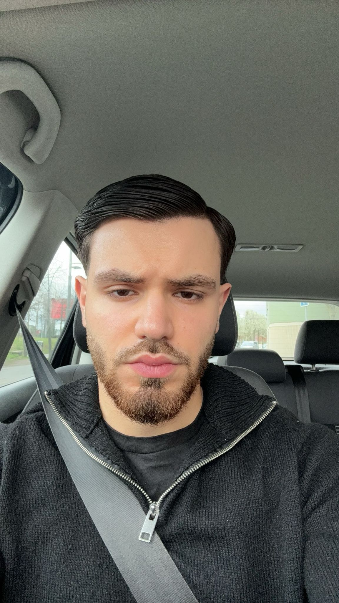

Furkan Dogan
Safe Cyber, opgericht door de ambitieuze en gepassioneerde Furkan Dogan, is een jong en dynamisch bedrijf gevestigd in het bruisende Antwerpen. Met een visie op een veiligere digitale toekomst, bieden wij op maat gemaakte cybersecurity-oplossingen voor zowel individuen als bedrijven.
Als 20-jarige ondernemer met een passie voor technologie en veiligheid, streef ik ernaar om mijn eerste stappen te zetten in de wereld van cybersecurity. Mijn achtergrond in data- en netwerkbeheer heeft mijn interesse gewekt voor de complexe uitdagingen en kansen die het digitale landschap biedt.
Bij Safe Cyber geloven we dat iedereen het recht heeft op een veilige online ervaring. Daarom bieden we een scala aan diensten, variërend van risico-evaluaties en beveiligingsadvies tot het implementeren van geavanceerde beveiligingsmaatregelen. Ons doel is om onze klanten gemoedsrust te bieden terwijl ze hun digitale wereld verkennen en laten groeien.
Met een focus op innovatie, integriteit en klantgerichtheid streven we ernaar om een betrouwbare partner te zijn in het verdedigen van uw digitale activa. Bij Safe Cyber zetten we ons in voor het beschermen van uw privacy, gegevens en online aanwezigheid, zodat u met vertrouwen kunt navigeren in het digitale tijdperk.